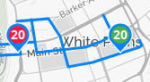

| Choose a route: |
This tool will show you the position of each Beeline Bus on a particular route in near real-time. Just choose the route from the drop-down on the left.
|  | How to read the map - Blue lines mark the approximate route. - Baloons indicate bus locations and route number. - Green baloons indicate that the bus is moving. - Red baloons indicate that the bus is stopped. |
Please note...
- This website was created as a proof of concept with real-time data from the Westchester County Transit API Service- The bus routes shown are approximate and may not correspond to the exact route taken by a bus on a particular day or at a particular time.
- For official schedules and routes visit: Beeline Bus
| OK, got it. Don't show me this again. |